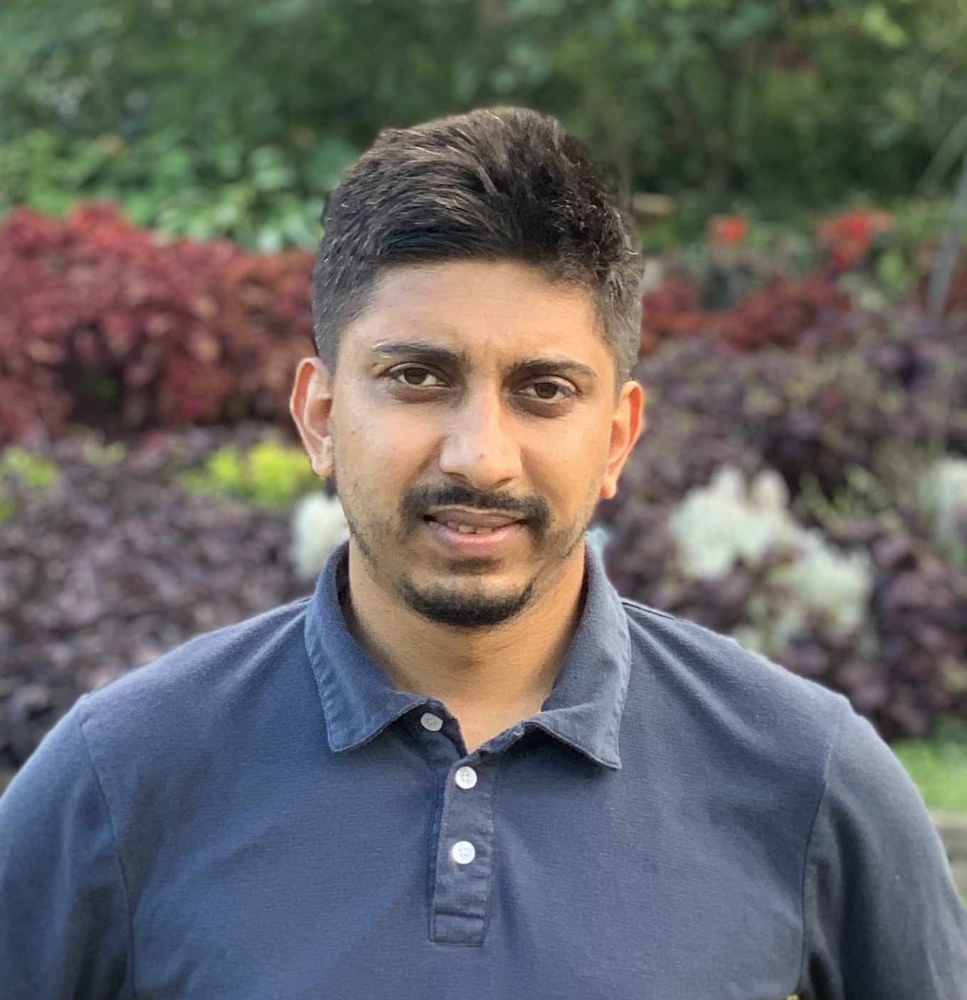

Praval Sharma
Ph.D. Student
School of Computing
University of Nebraska-Lincoln
psharma4[at]huskers.unl.edu


I am a Ph.D. student in the School of Computing at the University of Nebraska-Lincoln advised by Dr. Ashok Samal and Dr. Leen-Kiat Soh. I am a research assistant in the SURGE research project.
I am interested in spatial data mining, natural language processing, and GIS. Currently, I am working on extracting the 5Ws (where, when, who, what, and why) of events reported in news articles using NLP and spatial data mining techniques.
Outside of research, I enjoy sports, travelling, and music.